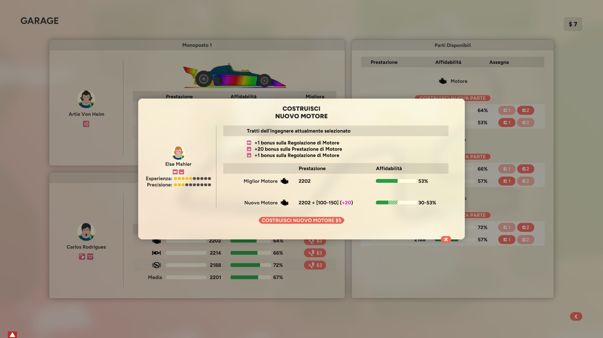
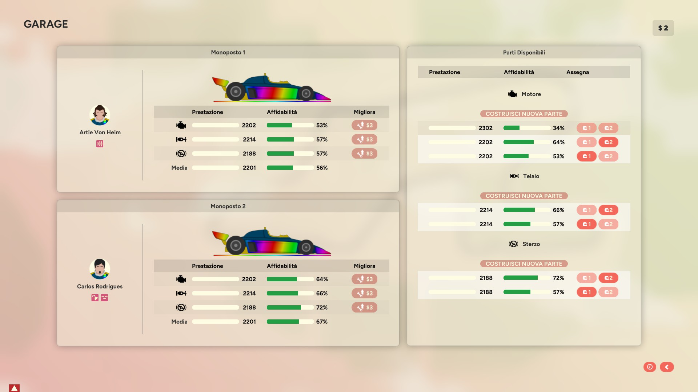

Golden Lap
Funselektor - Strelka Games (2024)
Indice
- introduzione
- prepariamo la mod
- Stagione 01 - costruiamo la squadra
- S01E01 - Circuit de Casino (MCO)
- S01E02 - Hopkins Boot (USA)
introduzione
Ho acquistato Golden Lap dopo aver giocato ad Art of Rally, sempre di Funselektor.
Mi è piaciuto lo stile minimale e la sensazione arcade ma non troppo di Art of Rally, e volevo riprovare un gestionale a tema F1 dopo che anni fa avevo lasciato perdere Motorsport Manager (2? 3?) per Android.
Golden Lap in due parole
di seguito userò il plurale sovraesteso, ma nel gioco i piloti, gli ingegneri e i caposquadra sono anche di genere femminile.
Si sceglie una scuderia, si compone la squadra in base ai soldi a disposizione, si sceglie uno sponsor principale, si inizia la stagione composta da 10 Gran Premi (GP).
Prima di ogni GP si può migliorare la propria auto o spiare le altre squadre.
Prima della gara ci sono le qualifiche in cui si possono regolare ulteriormente le parti del la propria auto.
Durante la gara si gestiscono gli stili di guida dei piloti, i consumi di gomme e di carburante, i pit stop e gli eventuali rallentamenti pet bandiere gialle o rosse.
Alla fine della gara piloti e squadra ricevono punti per la classifica in base al piazzamento e soldi in base ai criteri degli sponsor, e si ricomincia con una nuova gara.
Durante le gare i piloti possono infortunarsi o lasciarci le penne, e la squadra dovrà sostituire il pilota.
Alla fine della stagione la squadra riceve soldi in base al piazzamento e ai criteri degli sponsor, e inizia una nuova stagione.
Nella nuova stagione si riparte confermando i componenti della squadra a costo 0, oppure ingaggiando del nuovo personale.
prepariamo la mod
Dopo aver giocato a Golden Lap per circa 25 ore ho deciso di affrontare la run definitiva: partire con la scuderia con meno fondi iniziali e vedere dove arriverò dopo 10 stagioni.
Gli sviluppatori hanno chiaramente reso semplice il modding, creando pure una guida molto dettagliata.
Modificando i file .json si possono cambiare molti attributi delle squadre, dei piloti, degli ingegneri e dei caposquadra, oltre creare un calendario di gare non random come nel gioco base.
Sono modificabili anche i file .psd che permettono di personalizzare forme e livree delle monoposto, delle divise ma anche dei ritratti di piloti, ingegneri e caposquadra, che nella versione base sono stilizzati. Anche i loghi delle scuderie sono personalizzabili.
Per capire il livello di personalizzazione fatevi un giro su Steam Workshop e troverete molte mod, alcune delle quali hanno ricreato le decadi "reali" dagli anni 70 ai giorni nostri con un lavoro certosino.
La VB Racing
Con un po' di smanettamento su GIMP ho creato la grafica per la mia squadra: VB Racing.
Ne sono abbastanza soddisfatto, non saprei davvero fare di meglio.


Stagione 01 - costruiamo la squadra
È il 1970, la mia prima stagione.
Con una certa emozione seleziono la mia squadra tra le 10 disponibili e cerco di immaginarmi dove riuscirò ad arrivare...
Rapido elenco di equivalenza tra nomi di fantasia e nomi reali delle squadre:
- Ezzolini = Ferrari
- LaBrahn = McLaren
- Chapman = Lotus
- Weyland = Tyrrell
- Hemlock = Hesketh
- Pope = Williams
- Bancroft = Brabham
- Vernier = Ligier
- April = March
- Night = Shadow che io ho rilevato, modificandola nella mia VB Racing
Con i pochi soldi che abbiamo è difficile mettere insieme una squadra, anche perché quasi tutti i piloti medio-bassi sono già stati ingaggiati dalle altre scuderie. È il problema di iniziare con la squadra più scarsa: hai pochi soldi e scegli per ultimo.
Dopo aver esplorato un po' gli avanzi, abbiamo due opzioni:
1) ingaggiare un pilota decente come Piet Cilliers che da solo costa 15$, prendere un buon Mahler come ingegnere decente e tutto il peggio possibile che avanza, e stare su un design dell'auto conservativo

2) ingaggiare lo scarsetto ma promettente Artie Von Heim per 9$, mantenere Helm come ingegnere (anche perché è rimasto ben poco ed è meglio evitare un ingegnere incapace) e il resto lo si suddivide tra pilota e caposquadra e un design dell'auto equilibrato
Alla fine spendiamo meno per i piloti e di più per il resto della squadra. I risultati si fanno lavorando assieme! Avanzano soldi per scegliere il design dell'auto equilibrato (14$), che costa più del conservativo (12$) ma che si può potenziare maggiormente durante la stagione.
È il momento degli sponsor: stiamo con i piedi per terra e ci affiliamo a MetalTubing (quello più scarso) che mi garantisce maggiori entrate fisse ad ogni gara (3$), ma meno bonus in base al piazzamento (mi basta un 12° posto su 20 auto, a differenza di altri sponsor che chiedono un 8° o un 6° posto).
Ed eccoci qui, la VB Racing appena formata, pronta per affrontare la prima stagione della sua storia!
Prima di tuffarci nella stagione, un rapido elenco di equivalenza tra nomi di fantasia e nomi reali dei circuiti:
S01E01 - Circuit de Casino
Iniziamo male: il primo circuito in cui verosimilmente partiremo nella metà inferiore dello schieramento è quello in cui è più difficile fare sorpassi. Servirebbe partire con uno sterzo migliore, ma abbiamo finito tutti i soldi per costruire una squadra decente e non possiamo spenderne altri prima della gara. Ci affideremo al nostro ingegnere e alla sua capacità di regolare al meglio le auto durante le qualifiche. Poi chissà, se ci fossero incidenti, o se iniziasse a piovere, magari potremmo guadagnare posizioni con una buona strategia...
L'obiettivo minimo per questa prima gara è chiudere almeno al 12° posto per incassare i soldi bonus dello sponsor. Inutile pensare a chiudere nei primi 10 per dei punti iridati.
QUALI
Usciremo sempre come prima squadra dai box: avere pista libera aiuta a fare tempi migliori, ma non è il fine della prima parte delle qualifiche anche perché la pista non è ben gommata.
No, l'obiettivo è fare più giri possibili per prendere confidenza con il tracciato e cercare di migliorare l'auto il più possibile: un giro di lancio (OUT lap), un giro cronometrato, un giro di rientro ai box (IN lap).
Dopo il primo giro siamo P6 [VHM] e P7 [ROD]. Un risultato molto positivo, soprattutto perché su questo tracciato è difficile sorpassare: partire tra i mid-team ci permetterebbe di chiudere almeno in P12, risultato minimo per il pagamento degli sponsor.
Ma siamo solo al primo giro delle qualifiche del primo GP, andiamo con ordine.
Dopo un giro è il momento di regolare l'auto: le caratteristiche del circuito mi fanno propendere per potenziare lo sterzo ovviamente. E così farò per il resto delle qualifiche, fino ad arrivare al Golden Tune, cioè ad aver migliorato al massimo questo componente dell'auto.

Alcune guide suggeriscono di migliorare prima la parte meno perfomante della propria auto, ma io preferisco partire prima dal tracciato e poi eventualmente sistemare difetti dell'auto.
Dal secondo giro in poi inizia ad esserci traffico, e se si rimane imbottigliati non è detto che i propri tempi migliorino. Ma poco importa, perché è tutta esperienza da riportare ai box, per poi migliorare l'auto e ripartire di nuovo!

Dopo il 2° giro siamo P5 [VHM] e P8 [ROD], il che mi fa ben sperare sia per le qualifiche sia per la gara.
Al 3° giro VHM non migliora ed è P8 (non era concentrato, una delle caratteristiche base dei piloti oltre alla velocità) mentre ROD arriva a P6. Anche le altre squadre stanno migliorando le loro auto: bisogna stare al passo!
Ai box l'ingegner Mahler fa raggiungere a VHM e ROD il Golden Tune sullo sterzo e inizia a potenziare l'accelerazione, altro tratto fondamentale per questo circuito.
Dopo 4 giri siamo P10 [VHM] e P11 [ROD]. C'è giusto il tempo di un'ultima regolazione e di un ultimo fondamentale giro: l'ideale sarà partire all'ultimo momento utile, con pista più gommata possibile ma evitando il traffico, altrimenti sarà un giro sprecato e finiremo in fondo allo schieramento.
All'ultimo pit [ROD] arriva quasi al Golden Tune prue dell'accelerazione, e ora ha un'auto più competitiva di [VHM]. La sfida interna si deciderà all'ultimo giro di qualifiche.
Ci vogliono circa 2'30'' per fare un OUT lap prima di lanciarsi nel giro di qualifiche, bisogna stare attenti anche a come si comportano le altre auto.
VHM parte prima con pista abbastanza libera e chiude inizialmente P9 per poi essere sorpassato da Villalba [VIL] su Hemlock, e dal compagno di squadra ROD partito subito dopo che ha chiuso un giro concentrato.
Risultato finale:
- P9 ROD
- P11 VHM
Le dichiarazioni a caldo:
Prima delle qualifiche non ci aspettavamo di certo di essere a metà schieramento, anche se i primi giri ci hanno gasato non poco!
Durante le qualifiche non siamo riusciti a mettere a punto l'auto e il divario tecnico si è fatto sentire sul lungo periodo.
Peccato per l'ultimo giro di VHM, poteva migliorare ulteriormente la sua posizione, ma ci ha pensato ROD a piazzare una nostra auto in top 10.
Ora si tratta di creare una strategia ottimale per la gara di domani: la gara si deciderà ai box.
RACE
Sorpresa! Piove. E pioverà tutta la gara.
I TRATTI
Prima di lanciarci nella gara, dobbiamo parlare dei "tratti" dei piloti.
Ogni pilota può avere alcuni "tratti", cioè delle caratteristiche che influiscono in positivo o in negativo sulle sue capacità, sulla sua crescita e sul suo prezzo.
Il mio ROD è un "corsaro" (è costato di meno) e "mediatore" (concentrazione maggiore), VHM invece è "attento" (meno probabilità di incidente).
Mi sono preso un po' di tempo per guardare i tratti degli altri piloti.
Per questa gara ad esempio è importante sapere che Maldonado [MAL] ha un bonus su pista bagnata e dunque sarà più forte, ma poco importa: è davanti a noi e in un auto più performante (Chapman).
Villalba [VIL] e Steiner [STE] che si sono qualificati P10 e P12 hanno un bonus quando sono sotto P10, dunque sarà dura per noi averli alle calcagna. Stesso discorso per Acosta [ACO], che però parte P18 e probabilmente è nel team più scarso (April).
In griglia abbiamo quattro "spericolati" (aumentato rischio di incidente): Laframboise [LFR], Woods [WDS], Schaub [SCH] e Campbell [CAM].
Anche i circuiti hanno i tratti: Circuit de Casino (Monaco) è "dissestato" (+20% probabilità di incidente), "stretto" (-25% sorpasso, -25% prestazioni motore, +20% incidente), e "gioiello della corona" (compare in ogni stagione, gli sponsor pagano +2$).
Mi aspetto abbastanza incidenti, e conseguenti bandiere gialle da sfruttare per pit stop in cui perdere meno tempo
STRATEGIA
Tempo di impostare la strategia!
Il tracciato sarà bagnato fin dai primi giri, e le previsioni meteo che ci fanno vedere fino a quasi metà gara danno pioggia, con asfalto sempre più bagnato
Le gomme da bagnato sono Intermedie (meglio performanti su asfalto poco o mediamente bagnato) o Wet (per asfalto molto bagnato): inizieremo con le Inter, che terranno per circa 15 giri, poi passeremo alle Wet.
L'alternativa potrebbe essere partire con gomma asciutta (Soft, Medium o Hard) e fare un pit stop per montare le Inter, ma la pista rimarrà poco bagnata per troppi pochi giri.
IN PISTA!
Cinque luci rosse si accendono lentamente una dopo l'altra...
...e si spengono!
È iniziato il primo GP della prima stagione della VB Racing: in bocca al lupo ai piloti per la guida, all'ingegnere per le strategie e al caposquadra per i pit-stop!
LAP 02
Da P9 e P11 passiamo a P11 e P12: ci passano VIL e SCH. Non benissimo, ma siamo a ridosso di P10, che significa punti iridati!
I piloti spingono molto, il che significa tempi migliori ma anche maggior consumo di gomme e di carburante.
Li ho anche lasciati gareggiare tra di loro: nessun ordine di scuderia, liberi di sorpassarsi. Dentro di me so che VHM è più abile di ROD, ma voglio che si veda sulla pista.
LAP 11

Nonostante stiano spingendo sia nella Strategia di Guida (più velocità, più consumo di gomme), sia nella Modalità Motore (più accelerazione, più consumo di benzina) i nostri continuano a superare e a farsi superare dagli avversari diretti SCH e MAL.
La barra rossa accanto al loro nome ci indica che sono molto stressati da questa guida aggressiva e sono ad aumentato rischio di incidente.
LAP 15
Primi pit stop per alcuni dei team in testa. Le Inter stanno tenendo bene, secondo me ancora 3 o 4 giri dovrebbero reggere.
Andiamo avanti!
LAP 16
Pit per VIL e SCH che ci erano davanti!
C'è poco tempo per pensare! I nostri piloti sono vicini tra di loro ed è necessario diversificare la strategia, per evitare di fare pit-stop simultanei: il pilota in coda perderebbe troppo tempo!
VHM si ferma per montare le Wet, mentre ROD continua per almeno un altro giro, spingendo al massimo per guadagnare più tempo possibile fintanto che le Inter reggono.
LAP 19
Anche KUK della Pope si è fermato per montare le Wet e ci ritroviamo in fila alternata con il team che sembra essere il nostro avversario per P10.
- P11 KUK
- P12 VHM
- P13 SCH
- P14 ROD
La strategia è la stessa: almeno un altro pit-stop con gomme Wet, dato che le previsioni del tempo danno pista molto bagnata fino ad almeno il 4'° giro.
LAP 21-30
ROD ha un guizzo e supera SCH e il nostro VHM, ma nei giri successivi viene superato di nuovo.

Siamo P12 con ROD che si lamenta di non riuscire a passare KUK, e P13 con VHM.
LAP 31
Decido di invertire le auto e dare campo libero a VHM per provare a superare KUK.
Se non ce la farà invertiremo nuovamente le posizioni.
LAP 33
BANDIERA GIALLA - LOV si è schiantata, non ci si potrà sorpassare e si dovrà andare più lenti.
In questi casi i pit-stop sono più economici in termini di tempo perso, ma le gomme non sono ancora al 50%. Inoltre cambiando ora le gomme dovremo comunque fare un altro pit... A meno di decidere di chiudere la gara sulle seconde Wet facendole durare il più possibile. Ma quanto tempo si perderebbe?
Troppi pensieri, vediamo cosa faranno le due Pope davanti a noi. Dietro c'è una Hemlock a più di 40 secondi, potremo fermarci "gratis" e non perdere posizioni.
Entrambe le Pope si fermano!
Mannaggia, dobbiamo rispondere in qualche modo...
Facciamo fermare ROD con l'idea di far durare queste nuove Wet fino a fine gara (possibile con una strategia di guida molto conservativa), mentre VHM continuerà sulle Wet attuali.
Non ci credo che le due Pope riusciranno a portare a fine gara queste Wet, non dureranno 36 giri.
Al termine della bandiera gialla abbiamo:
- P8 VHM con Wet al 50%
- P10 SCH con Wet al 100%
- P11 KUK con Wet al 100%
- P12 ROD con Wet al 100%
LAP 40
La strategia conservativa di ROD in P12 non funziona: riuscirebbe a finire la gara su queste gomme, ma sta prendendo troppi secondi dalle Pope lì davanti. Ora è a più di 40'' di distanza, i nostri avversari hanno già guadagnato un pit-stop gratis. È tempo di cambiare strategia, spingere per ricucire il divario e sperare in un errore degli avversari.
Intanto VHM in P8 continua a spingere e guadagna tempo su VIL in P9 a quasi 20''. Quasi un pit-stop gratis per noi e la quasi sicurezza di chiudere la prima gara a punti!
LAP 41
BANDIERA GIALLA - VIL si è schiantato, non ci si potrà sorpassare e si dovrà andare più lenti.!
È quello che ci voleva: VHM fa un pit-stop e monta nuove Wet senza perdere posizioni. Si ferma anche SCH della Pope, copiando la nostra strategia.
Fermiamo anche ROD, che intanto aveva già recuperato 20'', per nuove Wet. Con queste nuove gomme si arriva a fine gara senza problemi e si può spingere.
Al termine della bandiera gialla abbiamo:
- P8 VHM con Wet al 100%
- P9 KUK con Wet al 75%
- P10 SCH con Wet al 100%
- P11 ROD con Wet al 100%
LAP 52
BANDIERA GIALLA - il nostro ROD si è schiantato mentre stava spingendo per recuperare il divario dalle due Pope!
Per fortuna non si è fatto male (qui i piloti possono infortunarsi o, addirittura, lasciarci le penne!), ma che peccato!
Le speranze della VB Racing si ripongono ora su VHM: ha alle calcagna KUK il quale però dovrà fermarsi per delle nuove Wet. SCH è invece a più di 15'' dietro, un distacco più che gestibile guidando con cautela ed evitando incidenti.
BANDIERA A SCACCHI
Ultima parte di gara tranquilla: un'altra bandiera gialla per l'incidente di FON, ma che non cambia il risultato finale.
VHM gestisce il suo vantaggio e taglia il traguardo in P8, mentre SCH e KUK completano la top 10.
Le dichiarazioni a caldo:
Siamo emozionati e molto soddisfatti per il risultato di oggi! La squadra ha portato avanti una buona strategia, pur dovendo adattarsi alle bandiere gialle e agli altri team. VHM ha fatto un ottimo lavoro e ha portato a casa i primi punti per la nostra squadra. ROD ha dato il massimo nonostante il cambio di strategia a metà gara. Ha avuto sfortuna alla fine, ma poteva giocarsela con le Pope per la P10, che sarebbe stato un risultato incredibile per la nostra piccola scuderia.
Ora dobbiamo metterci al lavoro. Mantenere questi risultati richiederà molto lavoro da parte di tutta la squadra: ora concentriamoci sullo sviluppo della nostra monoposto per la prossima gara.
S01E02 - Hopkins Boot (USA)
SPONSOR
Ecco il momento di scegliere lo sponsor temporaneo, che ci pagherà ulteriori fondi se in un determinato lasso di tempo raggiungeremo un suo obiettivo specifico (non facciamoci troppe domande sul senso degli obiettivi: sono loro che pagano).
MetalTubing: bonus di 2$ se in una delle prossime due gare useremo tutti gli pneumatici da mescola asciutta in una singola gara.
Fattibile: basta organizzare una strategia da 2 soste.
Fashion: bonus di ben 4$ se in una delle prossime due gare faremo finire i piloti in posizioni consecutive senza però dare ordini di sorpasso.
Impegnativa: i piloti sono quasi alla pari, ma possono accadere troppe variabili durante la gara.
Andiamo sul sicuro e scegliamo la MetalTubing.
PRE-GARA
Prima di ogni gara possiamo preparare meglio la nostra squadra.Possiamo migliorare una delle tre parti delle nostre monoposto: motore, cambio o assetto.
Possiamo costruire una nuova parte: costa di più, ma le prestazioni sono migliori.
Possiamo usare le spie: costano molto, se vengono scoperte ci beccheremo una multa e una decurtazione di punti, ma ci permetterebbero di copiare design di altre squadre, oppure di sabotarle!
Ma non siamo quel tipo di squadra.
Almeno perché non abbiamo i soldi necessari.
Per ora.
Altre informazioni utili che possiamo trovare nella schermata: il calendario di questa stagione, le classifiche piloti e costruttori, le caratteristiche del nostro ingegnere e del nostro caposquadra.

Il nostro ingegner Mahler ha come abilità quella di produrre motori migliori. Spendiamo dunque i 5$ necessari e ci ritroviamo con un motore con prestazioni migliori (2300 vs i 2200 del motore attuale), ma con bassa affidabilità (30% vs 60%).
Va più forte, ma può guastarsi durante la gara.

Per migliorare il motore abbiamo finito i soldi, ma possiamo sfruttare i pit-stop per migliorarlo in gara, seppur facendo perdere molto tempo al pilota.
La tentazione è di sacrificare ROD con il nuovo motore e fargli fare una serie di pit stop per migliorarlo: non si spendono soldi, ma si rinuncia a qualsiasi tentativo di successo.
Puntiamo sul lungo periodo: manteniamo VHM con il motore vecchio, montiamo a ROD quello nuovo e lo miglioreremo durante i pit stop.
Questa strategia si sposa bene con la sfida dello sponsor: usare tutte le mescole di pneumatici da asciutto in una singola gara.
ROD non segnerà punti, ma potrà fare più pit-stop per migliorare il motore e usare tutte le mescole di pneumatici da asciutto.
QUALI
Ci lanciamo nelle qualifiche!

Qualifiche bagnate, qualifiche fortunate(?)

Se poi il nostro capo squadra non avesse fatto i bagordi ieri ora riusciremo a cambiare le gomme molto più rapidamente tra un giro e l'altro, mannaggia.

La pista è bagnata, ma non troppo: le Inter determineranno la griglia di partenza, e quando la pista sarà troppo bagnata si dovranno montare le Wet, ma i tempi saranno molto più alti e dunque poco utili per la griglia.

Dopo il primo giro[VHM]è P6, [ROD]è P14.
Tempo di migliorare l'auto: puntiamo sullo sterzo (curve e frenata) di VHM e sul motore (accelerazione) di ROD. Vediamo come andranno i prossimi giri: in base a chi migliorerà di più capiremo quale componente è più importante per questa pista che ha molte curve ma molto ampie.
Manteniamo le Inter, la pista è ancora poco bagnata.

Dopo il secondo giro[VHM]non ha migliorato ed è P8, [ROD]invece è andato più veloce ed è P12.
Il motore sembra essere più importante dello sterzo, quindi ci concentreremo su questo componente.
Manteniamo le Inter, siamo molto al limite: la stanghetta nera verticale mostra quanto è bagnata la pista ora, mentre il segmento azzurro mostra il range di funzionamento delle gomme Inter. Speriamo di poter riuscire a fare un nuovo giro rapido, altrimenti la griglia sarà questa.

Niente da fare. [VHM]scende a P10, [ROD]in P15.
Il motore è stato migliorato ulteriormente, ma non siamo ancora al Golden Tune. La pista ormai è troppo bagnata e le ultime auto che sono uscite con le Inter non stanno migliorando i tempi.
Dovremo finire le qualifiche con le Wet, ma con il solo fine di cercare di migliorare l'auto, non certo per fare tempi migliori.
A tre quarti delle qualifiche [VIL] si schianta e la bandiera gialla ci ferma tutti ai box.
A fine qualifiche Riusciamo a fare Golden Tune su motore e sterzo di entrambe le auto, e su [ROD] arriva il Golden Tune anche del telaio.

Risultato finale:
- P10 VHM
- P15 ROD
A causa di una certa lentezza nella messa a punto tra un giro e l'altro non siamo riusciti a mettere a punto l'auto come volevamo nei primi giri, ma siamo comunque nel mezzo del gruppo e combatteremo per dei punti iridati.
Peccato per la bandiera gialla che ci ha tolto tempo prezioso per studiare meglio la pista.
La pista rimarrà bagnata anche in gara, quindi dovremo adattare la nostra strategia di conseguenza. torna in cima
RACE
Anche in questo caso pioverà tutta la gara.
Come per la prima gara [Mal] è l'unico che è forte sul bagnato, ma la sua Chapman è in P5 ed è fuori dalla nostra portata.
STRATEGIA
La pista parte già molto bagnata, dunque monteremo le Wet fin dall'inizio.
Le Wet durano dai 23 ai 43 giri, la gara ne dura 67, quindi 2 stop per entrambi i piloti, a meno di sorprese.
Niente strategie tra i piloti, liberi di combattere tra loro, ma probabilmente [VHM] sarà sempre davanti a [ROD].
Niente da fare invece la sfida sponsor: non riusciremo a usare tutte le mescole di pneumatici da asciutto in una singola gara.
IN PISTA!
Cinque luci rosse...
...VIA!
È iniziato il secondo GP della prima stagione della VB Racing!
LAP 1
Partenza difficile: [VHM] scende in P13 [ROD] in P19, nonostante la strategia aggressiva impostata.
Le nostre auto sono ancora scarse rispetto al resto del mid-field...
Non demordiamo!
LAP 10
P11 per [VHM] che è abbastanza vicino al treno di tre piloti davanti.
P19 per [ROD], che proprio non riesce a guadagnare posizioni. Se non succede nulla sono tentato di fargli fare 3 soste negli ultimi giri solo per guadagnare i soldi della sfida sponsor (e approfittare per migliorare il motore, anche se costeranno molti secondi di pit stop).
LAP 15
Sempre P11 per [VHM], che però non riesce a passare [VIL].
P18 per [ROD]: il sacrificio per i soldi dello sponsor si fa sempre più probabile
BANDIERA GIALLA
[CAM] si è schiantato!
Si fermano quasi tutti ai box per montare nuove Wet. Faccio fermare [ROD]/ per gomme asciutte e per riparare l'auto (in pre-gara costa soldi, in gara costa solo secondi).
Peccato per [VHM], che aveva appena passato il traguardo quando è iniziata la bandiera gialla, ma farà pit stop al termine del suo giro.
LAP 18
È una sofferenza vedere [ROD] arrancare con le gomme da asciutto e passare un minuto ai box per riparare l'auto, ma hey, i soldi guadagnati con gli sponsor e i soldi risparmiati con le riparazioni in gara sono pur sempre soldi!
Intanto [VHM] è P12 con gomme nuove a differenza di Fonseca [FON] in P11 con gomme usate... e subito lo sorpassa!
Ora la gara di [VHM] è su [VIL], per un punto iridato!
LAP 23
P10 per [VHM], che ha passato [VIL]. Davanti a lui solo Lovera [LOV] in P8 non si è fermato ai box, ma è troppo distante e non riusciremo a passarlo.
Forse riusciremo a raggiungere [SCH] in P9, che ha un vantaggio di 17 secondi? Cerchiamo di fare micro-managing per risparmiare gomme e carburante e spingere al massimo quando possibile.
F per [ROD], che finalmente ha rimontato le gomme da bagnato dopo aver cambiato tutte le gomme e aver migliorato di molto l'auto.
se volessimo farla sporca potremo cercare di causare un incidente a [ROD] (non c'è un comando apposito, ma se gli diciamo di spingere sempre prima o poi una frenata sbagliata arriva...) per favorire un pit stop comodo per [VHM] e non per [LOV]... chissà...
LAP 29
BANDIERA GIALLA
Il nostro [VHM] ha esagerato nella sua sfida con [KUK] che lo aveva appena soprassato ed è uscito di pista!
Gara terminata per la nostra VB Racing, con [ROD] ultimo a 4 giri dal vincitore.
Unica consolazione: le riparazioni e i soldi della sfida sponsor.
IL RESTO DELLA GARA
LAP 40: bandiera gialla per [HOS]
LAP 49: bandiera rossa per [HOL], sembra grave!
La gara viene interrotta: tutte le auto si fermano, possono fare cambio gomme e riparazioni negli 8 minuti che seguono l'incidente.
Sapremo solo dopo il termine della gara quanto grave è l'infortunio di [HOL].
LAP 59: bandiera gialla per [ACO] (e dopo 4 giri il nostro [ROD]esulta pure per aver superato un'auto schiantata!)
BANDIERA A SCACCHI
IL LUTTO
Henny Holgersson non si è ripreso dall'incidente. È morto. Che tragedia.